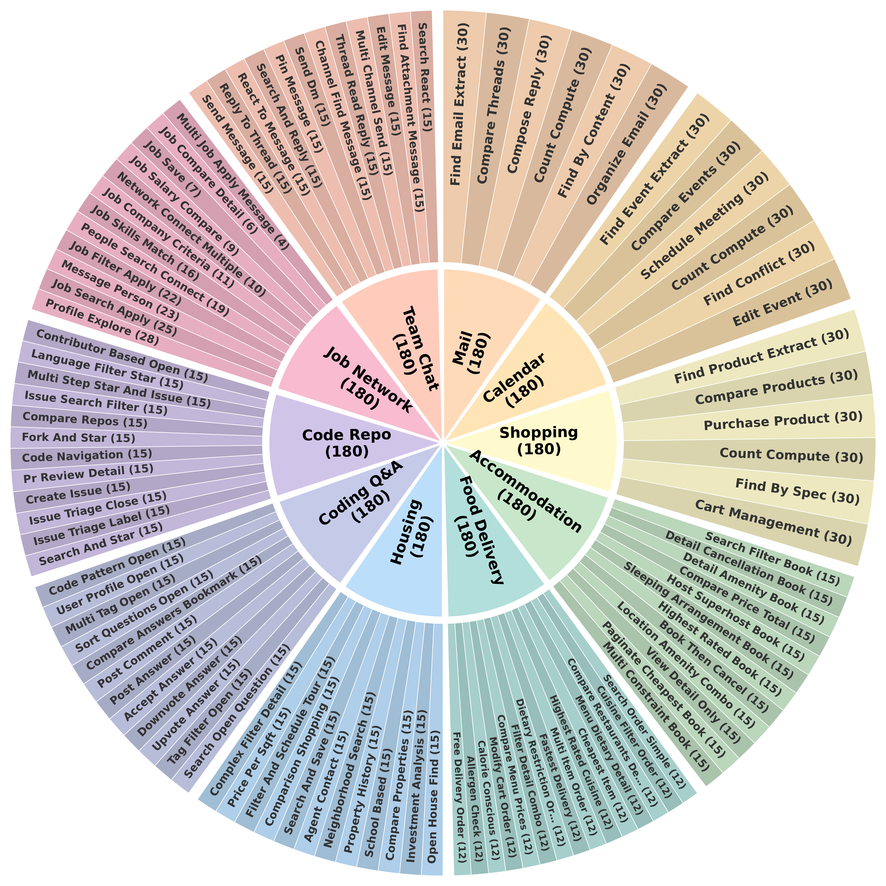

Success rates only tell you whether an agent worked. WebStep shows how it worked and where it went wrong, by recording every step in a semantic MDP, fully automatically.
We introduce WebStep, a benchmark for process-level evaluation of web agents. WebStep contains 1,800 task instances across 10 self-hosted websites with controlled difficulty, and is designed to move beyond terminal success as the sole measure of performance. Instead of evaluating only whether an agent reaches the correct final outcome, WebStep makes it possible to analyze how agents search, decide, and fail throughout an interaction trajectory.
An agent clicks, types, and scrolls on a real website. It never sees anything beyond the page itself.
see it in the demo 2The observer converts every raw GUI action into a semantic action and state in MDP space, so a click(272, 269) becomes ViewRepo(020). No manual annotation.
From the recorded trace, WebStep computes exploration, skill invocation, and efficiency, then localizes where a failing trajectory went wrong.
see it in the demoReveal behavioral differences invisible to terminal success, even among agents with similar overall success rates.
see the findingsExploration reach, execution accuracy, skill invocation, and bifurcation analysis localize agent behavior.
see the findingsWhere agents fail, why they fail, and how they should be improved.
see the findingsLive demo with real agent trajectories. Click or hover any step to inspect
The semantic MDP records states and transitions in the background as the agent interacts with the GUI. Skill labels, coverage, and efficiency are computed from the recorded trajectory with no manual annotation.
Interactive. Hover and click to explore

| Agent | Terminal (%) | Exploration (%) | Execution (%) | Coverage (%) | GUI Steps | Semantic Steps | GUI/Semantic |
|---|---|---|---|---|---|---|---|
| OpenAI CUA | 82.2 | 87.7 | 86.2 | 71.0 | 19.7 | 10.0 | 2.0 |
| Qwen3.5-122B | 57.9 | 66.1 | 73.7 | 67.7 | 22.1 | 9.8 | 2.3 |
| UI-TARS-1.5-7B | 32.6 | 46.3 | 50.6 | 62.6 | 35.0 | 14.0 | 2.5 |
| GUI-Owl-1.5-8B | 31.9 | 43.6 | 55.6 | 61.9 | 28.3 | 10.4 | 2.7 |
| Fara-7B | 31.4 | 43.6 | 55.7 | 60.6 | 18.9 | 8.3 | 2.3 |
Terminal success alongside process-level metrics from semantic MDP traces. Process metrics reveal behavioral differences not visible from terminal success alone.
Agents at 31-33% success diverge in exploration vs. execution accuracy.
OpenAI CUA beats Qwen3.5 by 23.7% on commits but trails by 15.6% on filtering, within the same domain.
GUI-Owl diverges at filtering; Qwen3.5 at inspection.
Similar on easy tasks, sharply different as complexity grows.
| Agent | Terminal (%) | Exploration (%) | Execution (%) |
|---|---|---|---|
| UI-TARS-1.5-7B | 32.6 | 46.3 | 50.6 |
| GUI-Owl-1.5-8B | 31.9 | 43.6 | 55.6 |
| Fara-7B | 31.4 | 43.6 | 55.7 |
Three agents land within a point of each other on terminal success, yet differ visibly in exploration reach and execution accuracy: differences that only process metrics expose.
@article{chung2026did,
title={Where Did It Go Wrong? Process-Level Evaluation of Web Agents with Semantic State Tracking},
author={Chung, Jiwan and Byun, JiHyuk and Vineet, Vibhav and Kim, Seon Joo},
journal={arXiv preprint arXiv:2606.15673},
year={2026}
}